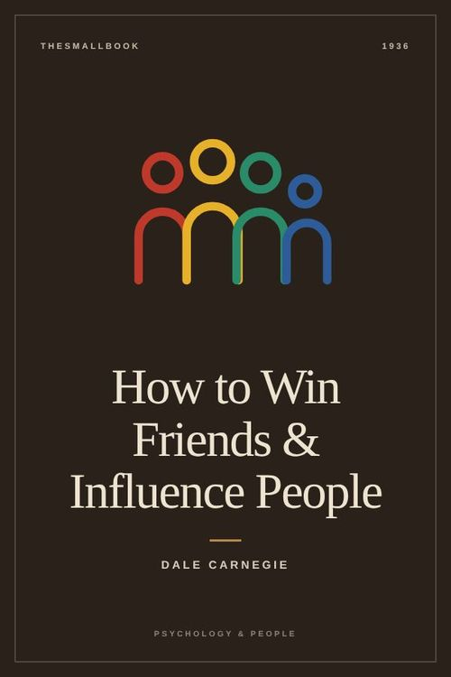

Library › Ask the Library › How do I crack a job interview?
How do I crack a job interview?
The short answer
Interviews are won before the room: research, stories, and the confidence of someone who prepared. Answer in stories, not adjectives.
The books behind the answer

How to Win Friends & Influence People
Dale Carnegie · 1936 · 11 min · 8 lessons
You can make more friends in two months by becoming interested in other people than in two years trying to get people interested in you.
- Six Ways to Make People Like You: The interviewer's favorite topic is their own company. Ask questions that show you did your homework.

So Good They Can't Ignore You
Cal Newport · 2012 · 8 min · 6 lessons
Don't follow your passion - bring it with you. Build career capital through deliberate practice, then cash it in for autonomy and mission.
- Career Capital: The best interview strategy is being rare and valuable, build skills until they can't say no.

The 5 Second Rule
Mel Robbins · 2017 · 8 min · 6 lessons
You'll never feel like it. Count 5-4-3-2-1 and move before your brain kills the impulse - a launch code for the life you keep postponing.
- Everyday Courage: Walk in with the 5-4-3-2-1 countdown already done, the hardest part is the first five seconds.

The 48 Laws of Power
Robert Greene · 1998 · 22 min · 16 lessons
Power is a social game. Learn its laws - to play them or to defend against those who play them on you.
- Never Outshine the Master: Confident, not cocky: let them feel like the expert who made the smart choice, you.
A failure that proves it
Why did Ford Edsel fail?
1958 · BUSINESS · Loss: $250M (≈ $2.5B today)
Ford hyped the Edsel for a decade, then reality hit. Under-promise in the interview, over-deliver in the job.
Hype raises the cliff, not the bridge. The bigger the launch, the harder the honest question matters beforehand: has anyone outside this building actually asked for this?
Questions people ask next
Can I read this in Hindi?
Yes. This answer is written in simple English. Open any linked book and choose Hindi or Hinglish to read the full lessons in your language, with audio where available.